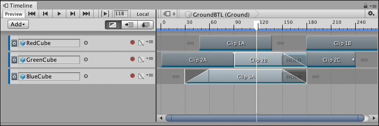
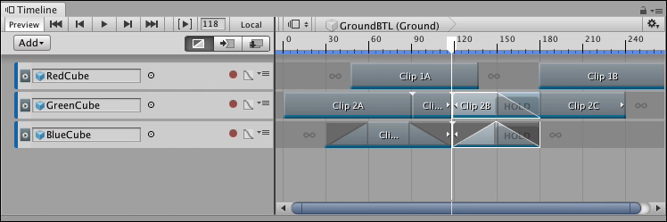

Splitting clips¶
You can split a clip into two identical clips that have different start points, end points, and durations. You can extend the start or end of the clip to include split animation or audio. You can also reset a clip to undo a split and other edits.
To split a clip, select the clip, position the playhead where you want to split the clip, and either right-click the clip and select Editing > Split, or press S. Any selected clips that intersect the playhead are split into separate clips. You can position, trim, and edit split clips independently.

Select the clips to be split, position the playhead where you want the split to occur, and press S

Selected clips are split where each clip intersects the playhead
If a split clip is part of a blend, or if the split is performed within a blend, Timeline copies the blend settings to the split clips.